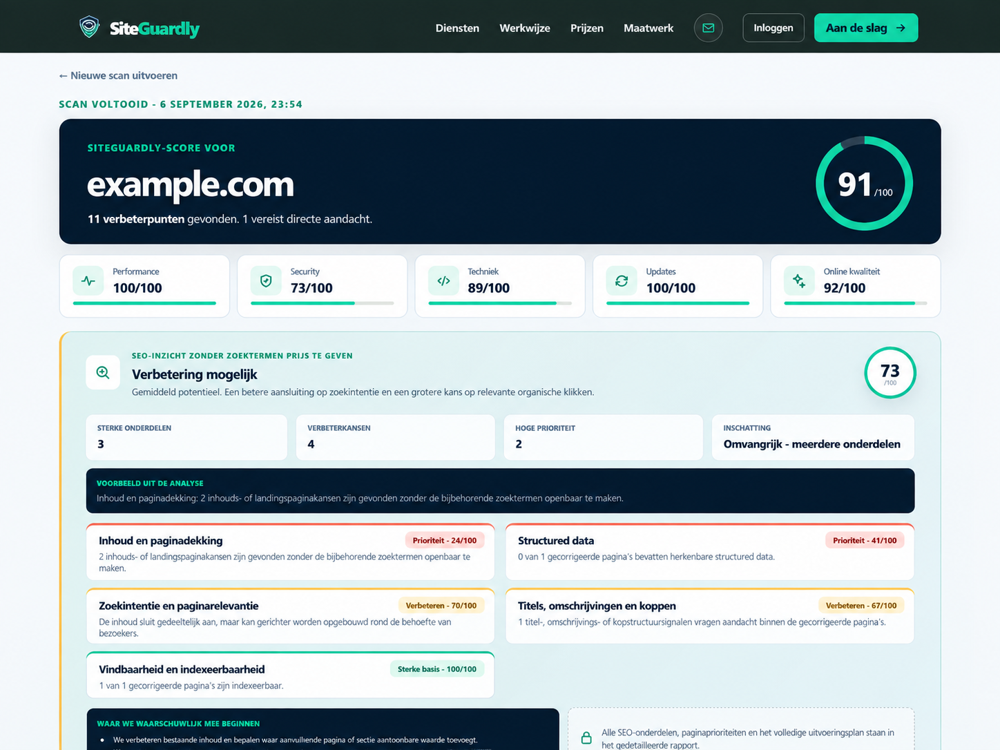
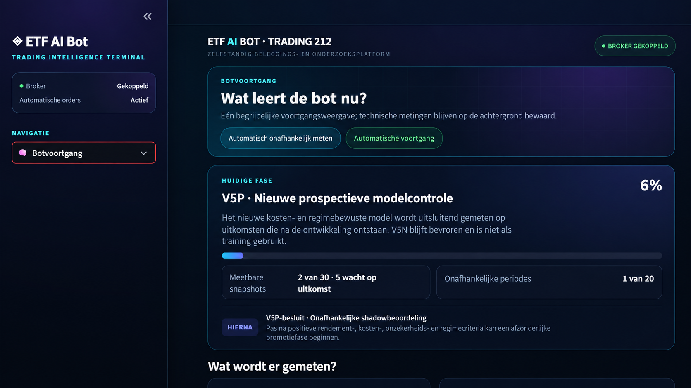
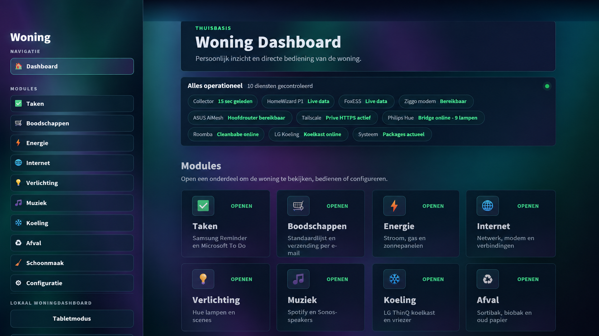

SiteGuardly Platform
A custom website quality, security and technical SEO platform with connectors, structured findings, customer reporting and controlled releases.
Read the engineering case study ↗Ellen Rensenbrink · Netherlands
More than 15 years of experience across custom WordPress and WooCommerce development, Python applications, API integrations, technical SEO and website security.
Selected work
These public case studies explain architecture, decisions and results while keeping customer data and production secrets private.

A custom website quality, security and technical SEO platform with connectors, structured findings, customer reporting and controlled releases.
Read the engineering case study ↗
A defensive research and automation platform with data-quality gates, explainable decisions and a strict separation between research and execution.
Read the engineering case study ↗
A resilient interface combining energy, lighting, audio, network and household systems without exposing private device credentials.
Read the engineering case study ↗A working PHP example that centralises admin, CSV and webhook changes behind one testable state-change boundary.
Inspect the source code ↗Expertise
Custom WordPress and WooCommerce architecture, themes, plugins, dashboards and migrations.
REST APIs, OAuth, webhooks, CRM, commerce, payment, accounting and marketplace connections.
Responsive dashboards, data pipelines, scheduled tasks, automation and resilient API clients.
Technical audits, structured data, information architecture, tracking and measurable remediation.
Malware investigation, hardening, access control, audit trails and safe recovery procedures.
Tests, documentation, staged delivery, monitoring and maintainable code ownership.
Delivery process
When the platform permits it, development takes place in a private sandbox. Progress and decisions remain visible on a shared board, while the public website stays stable.
Clarify the objective, risks, data and acceptance criteria.
Implement and test in a controlled environment.
Share progress, receive comments and record approval.
Deploy, verify and document the completed change.
Public evidence, private responsibility